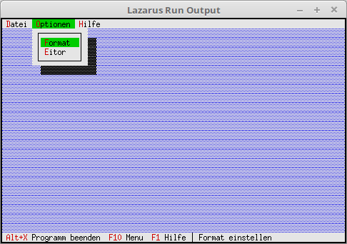

02 Statuszeile und Menu
12 Menu Hinweise

Hinweise in der Statuszeile der Menü-Punkte.
Konstanten der einzelnen Hilfen.
Am besten mimmt man da hcxxx Namen.
const
cmList = 1002; // Datei Liste
cmAbout = 1001; // About anzeigen
hcFile = 10;
hcClose = 11;
hcOption = 12;
hcFormat = 13;
hcEdit = 14;
hcHelp = 15;
hcAbout = 16;
Die Hint-Zeile muss vererbt werden.
procedure TMyApp.InitMenuBar;
var
Rect: TRect; // Rechteck für die Menüzeilen-Position.
begin
GetExtent(Rect);
Rect.B.Y := Rect.A.Y + 1;
MenuBar := New(PMenuBar, Init(Rect, NewMenu(
NewSubMenu('~D~atei', hcFile, NewMenu(
NewItem('~B~eenden', 'Alt-X', kbAltX, cmQuit, hcClose, nil)),
NewSubMenu('~O~ptionen', hcOption, NewMenu(
NewItem('~F~ormat', '', kbNoKey, cmAbout, hcFormat,
NewItem('~E~itor', '', kbNoKey, cmAbout, hcEdit, nil))),
NewSubMenu('~H~ilfe', hcHelp, NewMenu(
NewItem('~A~bout...', '', kbNoKey, cmAbout, hcAbout, nil)), nil))))));
end;